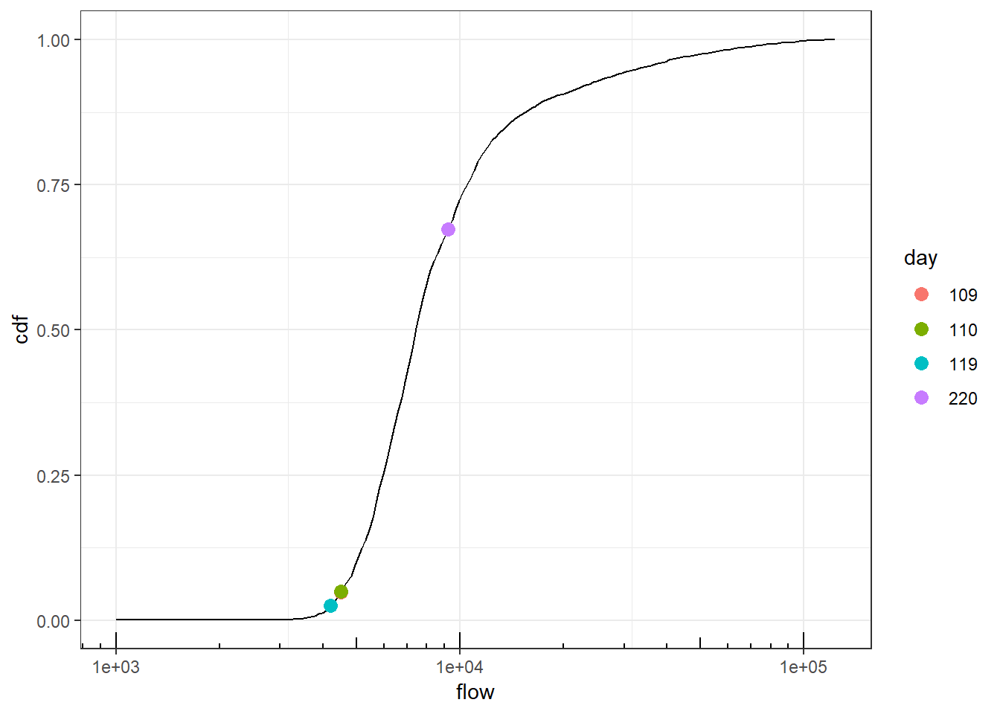

3 Methods
3.1 SWOT River Data Products
- SLC product, simulation thereof
- Stages of processing, fields calculated
- Pixel cloud
- node assignment
- reach aggregation
- computation of slope
- Prior database, uses
- Required to assign pixels
- Refinement of prior db
3.2 Datasets
The study area consists of 733 nodes in comprising 10 reaches in the Sacramento River between 38.92 and 39.75 degrees latitude. Two simulations of the SWOT single-look complex (SLC) were created using two different flow conditions; other simulation parameters including \(\sigma_0\) for water and land, SWOT pass number, and smearing distance were held constand. The water and land \(\sigma_0\) were selected so as to remove any impact of layover.
- Datasets come from simulation of SWOT SLC using hydrodynamic models forced by observed hydrologic conditions
- Validation data come from GDEM
- Simulated river is #### km section of Sacramento River
- Passes of SWOT satellite
| pass | n_nodes | date | flow | flow_pctile |
|---|---|---|---|---|
| 249 | 698 | 2009-02-20 | 9224 | 67.3 |
| 264 | 447 | 2009-01-10 | 4513 | 5.0 |
| 527 | 733 | 2009-01-19 | 4203 | 2.6 |

- Statistics about validation variables


3.3 Error scaling
The different SWOT observations are reported with estimates of \(1 \sigma\) uncertainty; the objective of uncertainty validation is to determine how accurately these uncertainty estimates match the behavior of empirical errors. In order to easily compare across a set of validation data with varying uncertainty estimates, we employ a simple transformation such that the mean and variance should be equal across all transformed validation data.
Consider an arbitrary measured variable (e.g. node height, reach width, pixel latitude), denoted \(x_{st}\), where \(s\) indexes location (in space), and \(t\) indexes time. Because \(x\) is not precisely determined and has nonzero error, we can consider it a random variable. The corresponding true value, of which \(x\) is an estimate, is denoted \(x^*\). The error, \(\epsilon\), is defined as \(\epsilon = x - x^*\). Because \(\epsilon\) is a transformation of a random variable, it is itself a random variable. We denote the mean, variance, and standard deviation of \(\epsilon\) as \(\mu_\epsilon\), \(\sigma^2_\epsilon\), and \(\sigma_\epsilon\), respectively, and similarly for other random variables.
The objective of this study is to validate the quantification of uncertainty, where uncertainty is expressed as an estimate of \(\sigma_x\). We denote this estimate \(\hat{\sigma}_x\), to distinguish it from the true value \(\sigma_x\). We perform this validation over a potentially large number of locations \(s\) and times \(t\) (although at present only a single time has been considered). The data for a given observed variable therefore consist of observations of \(x_{st}\) and \(\hat{\sigma}_{st}\); these are both provided in the rivertile product produced by RiverObs.
In order to validate the estimates \(\hat{\sigma}_{st}\), we rely on analogous gdem-derived synthetic data that give, for our purposes, “true” values \(x^*_{st}\). Thus we can calculate a corresponding set of empirical errors \(\epsilon_{st}\) for every location and time in the dataset. Since \(\epsilon_{st} = x_{st} - x^*_{st}\), then if our uncertainty estimates are correct (\(\hat{\sigma}_{x_{st}} = \sigma_{x_{st}}\)), we obtain \(\sigma_{\epsilon_{st}} = \sigma_{x_{st}}= \hat{\sigma}_{x_{st}}\). A simple elementwise scaling, \(e_{st} \equiv \epsilon_{st} / \hat{\sigma}_{x_{st}}\) therefore has \(\sigma_{e_{st}} = 1\) for all \(s\) and \(t\). (Recall that for any random variable \(Y\) with mean \(\mu_Y\) and variance \(\sigma^2_Y\), a linear transformation of the form \(W = aY + b\) has mean \(\mu_W = a\mu_Y + b\) and variance \(a^2\sigma_Y^2\). This is true regardless of distribution.)
Thus scaled, the errors \(e_{st}\) can be compared across locations and times in order to validate the uncertainty estimates. A “good” model for \(\sigma_x\) will result in a set of \(e_{st}\) with empirical standard deviation that is close to 1. This observation leads directly to explicit tests for verifying the model responsible for producing \(\hat{\sigma}_{x_{st}}\).
3.3.1 Error Decomposition
Uncertainty can be parsed into two components–bias and variance, corresponding to “systematic” and “random” errors. Strictly speaking, if \(\sigma_x\) is defined to be a standard deviation (square root of variance), then it does not include bias, and therefore ignores a potentially large component of uncertainty. Adjusting \(\hat{\sigma}_x\) cannot remove this bias, but it can account for it by “lumping it in” to the variance. This choice of whether or not to account for bias leads to two separate sets of uncertainty validation–with and without bias-adjusting the scaled errors. Since the uncertainty estimates are produced using a method that explicitly assumes zero bias, it makes sense to validate these estimates without including bias. On the other hand, real-world errors will include both random and systematic components, and a true assessment of uncertainty should somehow measure how well uncertainty estimates account for the full error distribution–including bias.
3.3.2 Assumptions of Normality
The uncertainty estimates \(\sigma_{x_{st}}\) are provided without explicitly assuming a probability distribution for \(x\) (or, equivalently, \(\epsilon\)). However, explicit probabilistic tests for the truth of \(\sigma_{x}\) are parametric, and rely on distributional assumptions, for example normality. The normality assumption is a reasonable one in the case of SWOT data, for at least two reasons. First, the feature-level measurements constitute aggregating (summing) over many independent radar “looks”, and as such will tend towards normality according to the central limit theorem. Second, the normal distribution has the property that it has the maximum entropy–colloquially, the maximum randomness–of any distribution for which all that is known is the mean and standard deviation. In SWOT data, that is the case: all that is reported is an estimate (\(x\)) and a standard deviation (\(\sigma_x\)). Thus, the normal distribution is a conservative choice; using any other distribution would unduly constrain the randomness it expresses.
3.3.3 Tests for validity of \(\hat{\sigma}_{x}\)
3.3.3.1 Visual Checks
The scaled errors, \(e_{st}\), are expected to have standard deviation equal to 1 for all locations \(s\) and times \(t\). Therefore, a histogram of \(e_{st}\) should display most scaled errors between -1 and 1, and with a peak at 0 (if errors are unbiased and symmetrical). Other distribution plots (e.g. box and violin plots) should reveal the same. The stronger assumption of normality can be visually inspected using a histogram with a standard normal pdf superimposed; this should roughly match the (appropriately scaled) bars of the histogram. A normal quantile-quantile (QQ) plot checks the normality assumption more explicitly, and makes clear which parts of the distribution most strongly diverge from normality.
This rationale does not rule out selection of a more appropriate distribution based on empirical error distributions, rather the point is to justify the normal assumption a priori.
3.3.3.2 Qualitative checks
Descriptive statistics including the empirical standard deviation, RMSE, and percentiles of scaled errors can verify qualitatively the closeness of the observed to the theoretical error distribution. If the errors are unbiased and uncertainty estimates are correct, then both the RMSE and standard deviation should be approximately 1. Similarly, if we assume normally distributed errors then empirical quantiles should match theoretical–for example, the .025, .16, .5, .84, and .975 quantiles of \(e_{st}\) should be approximately -1.96. -1, 0, 1, and 1.96, respectively. We do not expect these correspondences to be exact, only close enough to satisfy intuition.
3.3.3.3 Quantitative Hypothesis Test
Assuming errors to be normally distributed, we can formulate an explicit hypothesis test for the following:
- Null hypothesis: \(\sigma_{e_{st}} = 1\) for all \(s\), \(t\).
- Alternative hypothesis: \(\sigma_{e_{st}} \ne 1\) for some \(s\) and/or \(t\).
Under the null hypothesis, a test statistic of the form \(\chi^2 \equiv \sum_{s,t}(e_{st} - \bar{e})^2\) has a chi-square distribution with degrees of freedom equal to the total number of data in the validation set minus 1.
Using a type-1 error rate of 0.05, the hypothesis test would reject the null hypothesis if the test statistic lies outside of the 0.025 - 0.975 quantile range of the chi-square distribution, and otherwise not reject the null hypothesis.
The same test could be modified to include the assumption that errors are unbiased, by removing the subtraction of \(\bar{e}\) from the definition of \(\chi^2\) above.